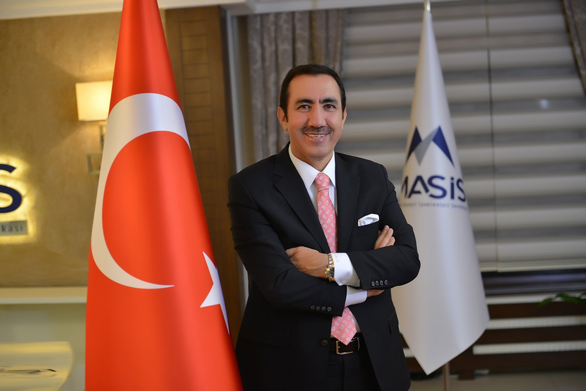
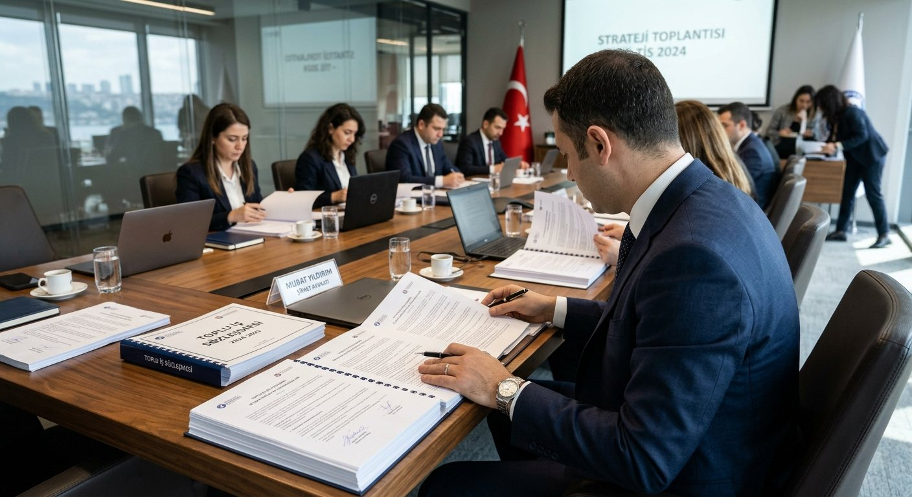
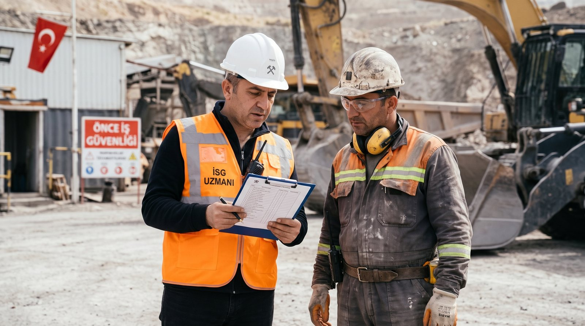
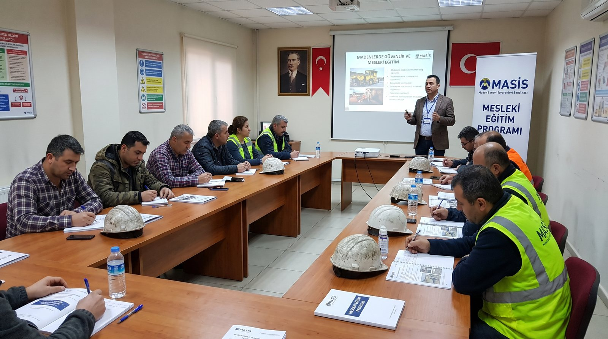
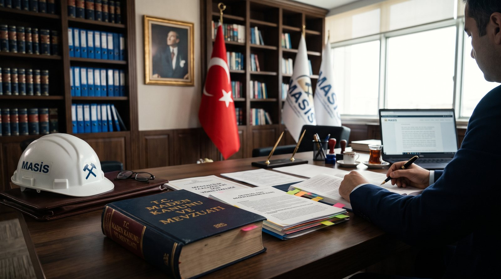
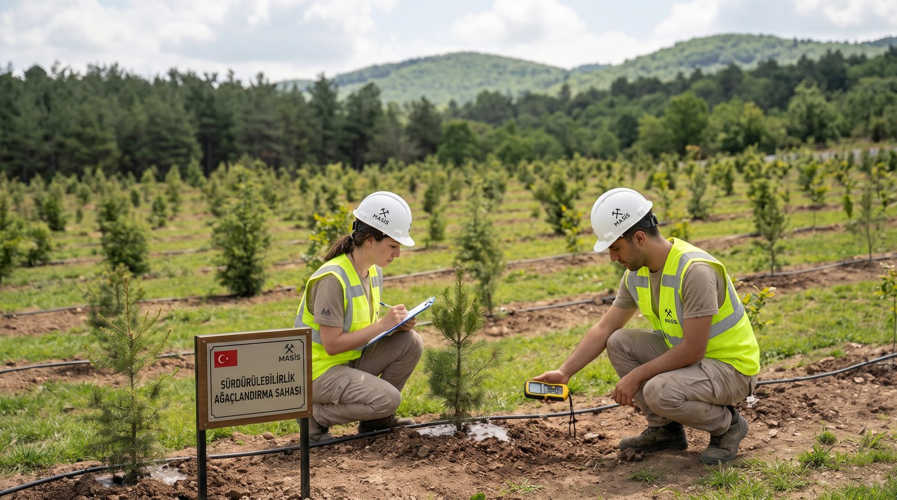

Maden Sanayii İşverenleri Sendikası
Maden Sanayii İşverenleri Sendikası (MASİS), 6356 sayılı Kanun'daki 03 numaralı Madencilik ve Taş Ocakları işkolunda faaliyet gösteren firmaları tek çatı altında birleştirmek amacıyla Ekim 2018'de Ankara'da kurulan, madencilik sektörünün ilk ve tek işveren sendikasıdır.
Toplu iş sözleşmesi süreçlerinden iş sağlığı ve güvenliğine, maden mevzuatından çevreye duyarlı madenciliğe kadar sektörün ortak meselelerinde üyelerimizi ulusal ve uluslararası platformlarda temsil ediyoruz.
Devamını okuyun
Maden Sanayii İşverenleri Sendikası olarak, ülkemizin aydınlık geleceği yolunda elde edeceğimiz üstün başarılarla sektörümüzü taçlandırmak için var gücümüzle çalışacağız.
Üyelerimiz için ne yapıyoruz?

Toplu İş Sözleşmeleri
Üyelerimiz adına toplu iş sözleşmesi süreçlerini yürütüyor, çalışma barışını gözetiyoruz.
AyrıntılarBireysel ve Toplu İş Hukuku
Çalışma ilişkilerine dair mevzuatı takip ediyor, üyelerimize hukuki destek sağlıyoruz.
Ayrıntılar
İş Sağlığı ve Güvenliği
Güvenli madencilik için mevzuatı takip ediyor, iyi uygulamaları üyelerimizle paylaşıyoruz.
Ayrıntılar
Mesleki Eğitim
Sektörün nitelikli işgücü ihtiyacı için mesleki yeterlilik çalışmalarını destekliyoruz.
Ayrıntılar
Maden Mevzuatı
Kanun ve yönetmelik hazırlık süreçlerinde sektörün görüşlerini ilgili kurumlarla paylaşıyoruz.
Ayrıntılar
Sürdürülebilirlik
Çevreye ve topluma duyarlı, sorumlu madencilik uygulamalarını destekliyoruz.
AyrıntılarMadenciliğin ülke ekonomisine katkısını güçlendirmek için birlikte çalışıyoruz.
Haberler ve Duyurular
Yeraltı Kömür Madenlerinde Kendiliğinden Yanabilirlik Etüdü ile İSG Uygulamalarının İzlenebilirliğinin Artırılması” projesi kapsamında ikinci eğitimimiz gerçekleştirildi.
“Yeraltı Kömür Madenlerinde Kendiliğinden Yanabilirlik Etüdü ile İSG Uygulamalarının İzlenebilirliğinin Artırılması” projesi kapsamında ikinci eğitimimiz Zonguldak Bülent Ecevit Üniversitesi’nden Öğretim Üyesi Sayın…
Maden Kanunu Uygulama Yönetmeliği Taslağı MAPEG Toplantısında Değerlendirildi
Madencilik Platformu’ndan Sayın Cevdet Yılmaz Bey’e Ziyaret
V. Uluslararası Temiz Kömür Teknolojileri ve Milli Enerjide Değer Zinciri Zirvesi
5. Uluslararası Temiz Kömür Teknolojisi ve Milli Enerjide Değer Zinciri Zirvesi ve Fuarı
Yeraltı Kömür Madenlerinde Kendiliğinden Yanabilirlik Etüdü ile İSG Uygulamalarının İzlenebilirliğinin Artırılması” projesi kapsamında ikinci eğitimimiz gerçekleştirildi.
“Yeraltı Kömür Madenlerinde Kendiliğinden Yanabilirlik Etüdü ile İSG Uygulamalarının İzlenebilirliğinin Artırılması” projesi kapsamında ikinci eğitimimiz Zonguldak Bülent Ecevit Üniversitesi’nden Öğretim Üyesi Sayın…
Maden Kanunu Uygulama Yönetmeliği Taslağı MAPEG Toplantısında Değerlendirildi
Madencilik Platformu’ndan Sayın Cevdet Yılmaz Bey’e Ziyaret
Çalışma ve Sosyal Güvenlik Bakanı Sayın Prof. Dr. Vedat Işıkhan, MASİS Heyetini Kabul Etti
Cumhurbaşkanı Yardımcısı Sayın Cevdet Yılmaz ve Bakanlarla Madencilik Sektörünün Sorunları ve Beklentileri Görüşüldü
AYM, Maden Sondajı Faaliyetinin ÇED’den Muaf Oluşunun Anayasaya Aykırı Olmadığına Hükmetti
Danıştay Altıncı Dairesi, Maden Kanunu’nun 17. maddesinde yer alan “… karot, kırıntı ve numune alma ile bunlara yönelik sathi hazırlık işlemleri içeren faaliyetler…” için Çevresel Etki Değerlendirmesi (ÇED) kararı…
Yetkilendirilmiş Tüzel Kişiler İle İlgili Yönetmelikte Değişiklik Yapılmasına Dair Yönetmelik
Maden Sahaları İhale Yönetmeliğinde Değişiklik Yapılmasına Dair Yönetmelik
Maden Kanununun I (A) Grubu Madenleri İle İlgili Uygulama Yönetmeliğinde Değişiklik Yapılmasına Dair Yönetmelik
Jeotermal Kaynaklar ve Doğal Mineralli Sular Kanunu Uygulama Yönetmeliğinde Değişiklik Yapılmasına Dair Yönetmelik


Sektörün önde gelen işverenleri